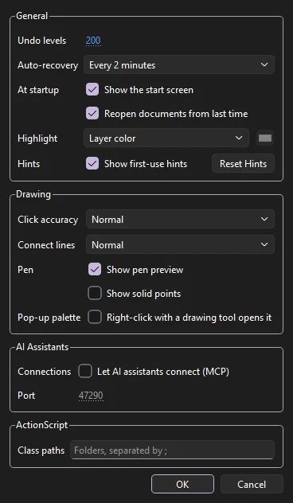
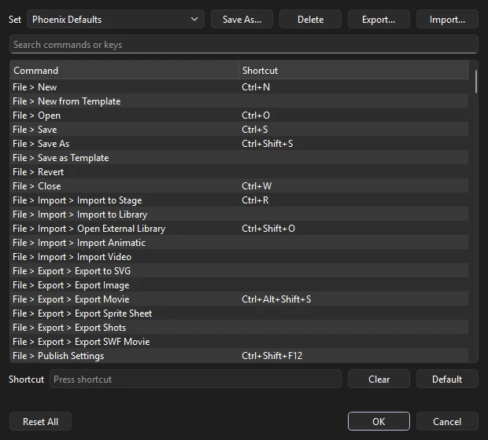

Reference
Settings and preferences
Phoenix remembers the choices you make as you work, and you change most settings where you use them. A few general ones are in the Preferences dialog, and almost every key can be changed in Keyboard Shortcuts.
Preferences
Choose (Ctrl+U). The dialog is one page in four groups: General, Drawing, AI Assistants and ActionScript. Changes apply when you click OK; Cancel leaves everything as it was. Preferences belong to Phoenix, not to a document, so they hold for every file you open.

General
- Undo levels
- How many steps can go back, from 1 to 9999; 200 unless you change it. The oldest steps are let go as new ones come; No limit (type 0) keeps them all, at the cost of memory.
- Auto-recovery
- How often a recovery copy of unsaved work is written: every 1, 2, 5 or 10 minutes, or Off. The same setting as ; see Auto-save and recovery.
- At startup
- Show the start screen. Turn it off and Phoenix reopens your most recent file instead. Reopen documents from last time, on unless you turn it off, opens the saved documents that were open when you quit, each in its tab; the start screen then shows only when there were none.
- Highlight
- Layer color outlines a selection in its layer's color; One color outlines every selection in the color you pick with the button beside it.
Drawing
These settings change how the drawing and selection tools read your mouse or pen. Each is measured in pixels on the screen, not on the stage, so it feels the same at every zoom.
- Click accuracy
- How near a click must be to a line, a point or a handle to pick it: Strict (2 screen pixels), Normal (4) or Tolerant (8). Strict helps when lines lie close together; Tolerant makes thin lines easier to hit. It applies when you click with the selection tools, the Pen and anchor point tools, the Width tool, the Paint Bucket, Ink Bottle and Eyedropper, and to how near the cursor must come for snapping.
- Connect lines
- How near the two ends of a Pencil line drawn in Straighten mode must be to be joined into a closed shape: Must be close (8 screen pixels), Normal (15) or Can be distant (30). It works when the Pencil's own Connect lines option is on.
- Pen
- Show pen preview, on by default, draws the next segment from the last point to the cursor before you click, so you can see the curve you are about to make. Show solid points draws the anchors of the path being drawn filled in blue instead of white. See Pen.
The Pencil's other tidying settings are on its Tool tab rather than here: Pencil mode, Smoothing, which sets how much the line is smoothed, and Recognize shapes, which turns a rough rectangle or oval into a true one. See Pencil. To smooth or straighten lines already drawn, use ; see Shape commands.
AI Assistants
Let AI assistants connect (MCP) lets an assistant on this computer, such as Claude Desktop or Claude Code, read and change the document you have open in Phoenix, on the Port given (1024 to 65535). Off by default. Phoenix asks before each assistant starts working, and takes connections only from this computer. See AI assistants.
ActionScript
Class paths: folders of ActionScript 3 class files, separated by ;, that every movie played in Test Movie can use, after the movie's own. Classes in them are found by package, so com.studio.Hat is com/studio/Hat.as in one of the folders. See Class files.
Settings found elsewhere
Phoenix keeps most settings next to the thing they change rather than in Preferences:
| To change | Go to |
|---|---|
| The window's colors, font size and UI scale | ; see Themes |
| Panel layouts | ; see Workspaces |
| The tools in the Tools panel | |
| Keys for commands and tools | ; see below |
| Fonts shown in place of missing ones | ; see Missing fonts |
| The format new documents save in | |
| Snapping, the grid and guides | The View menu; see Grid and snapping |
| Each tool's options | The Tool tab of the Properties panel; see Drawing tools |
| Default swatches | Save as Default in the Swatches panel menu; see Swatches |
Phoenix has no preferences for undo kept separately per object, for clipboard image formats, or for script and code editor formatting.
Keyboard shortcuts
Choose (Ctrl+Alt+Shift+K) to see every menu command and tool with its key. Type in the search box to find a command by name or by key. Select a command, click in the Shortcut box and press the keys; a key another command had is taken from it, and the dialog says which. Keys given to two commands show in red, and keys you have changed in bold. Clear takes the key off the selected command, Default gives it its own key back, and Reset All gives every command its own.

Save your keys as a named set with Save As, switch between sets from the Set list, and remove a set of your own with Delete. Export and Import pass a set to another machine as a JSON file.
The Set list starts with two built-in sets. Phoenix Defaults gives every command its own key. Animate Standard uses the keys most animators who work with FLA files already know, for the commands Phoenix has. Phoenix's own keys are the same for every command both have, so the set mostly takes away the keys of commands only Phoenix has. A key the set gives one command is taken from any command that had it.
Import also reads shortcut sets exported from other animation software, as XML or as a text list of commands and keys. Each command is matched to Phoenix's by its menu and name, or by the other name it is known by where Phoenix names it differently. Keys written for macOS (Cmd, Option) become Ctrl and Alt. Phoenix then says how many were matched and lists the commands it does not have.
From the command line, Phoenix shortcuts lists every command with its key, and Phoenix shortcuts --defaults lists Phoenix's own.
What Phoenix remembers
| Setting | Where you change it |
|---|---|
| Recent files (the last ten) | and the start screen |
| Whether the start screen appears | Show at startup on the start screen |
| Auto-save interval | or Preferences |
| Grid shown over the art, Clip Content Outside Stage, Pasteboard, Dim Outside Document, Lock Guides | The View menu, and the stage controls on the edit bar |
| Mute Movie Clip Sounds | The View menu |
| Enable Simple Frame Actions | The Control menu |
| Frame size, row height, frame previews, time in seconds and span based selection | The frame view menu (☰) in the timeline header |
| Window size and panel layout | Arrange the window and panels; they are restored next time |
| Saved workspaces, and the one in use | |
| Which tools the Tools panel shows, and in what order | |
| The theme, your own themes, and the UI scale | |
| Keyboard shortcuts and saved shortcut sets | |
| Undo levels, highlight, click accuracy, connect lines and pen display | |
| The format new documents save in | |
| Outliner shown or hidden, and its width | , or drag its edge |
| The brushes' settings and presets, brush mode and texture, and the Eraser's nib (other tools start from their defaults each session) | The Tool tab of the Properties panel and Brush Properties and Presets |
| Onion skin range, mode, opacity and colors | |
| High-quality anti-aliasing, Snap to Pixels | The View menu |
| Last New Document size and frame rate | The New Document dialog |
| Symbol type and registration | The Convert to Symbol dialog |
| Last export format and its options | The Export Movie and Export Sprite Sheet dialogs |
| Jobs waiting in the render queue | |
| Default swatches for new documents | Save as Default in the Swatches panel menu |
| The program bitmaps open in with Edit With | The Library |
| Your name on review notes | The Review Notes panel |
| Saved custom eases, motion presets, brush presets and filter presets | Where each is saved: the Custom Ease dialog, the Motion Presets panel, Brush Properties and Presets, and the Properties panel's Filters section |
| Last folders used to open and import | The file dialogs |
Settings saved in the document
Some settings belong to a document rather than to Phoenix, so they travel with the file: the stage size, frame rate and color, ruler guides, Snap to Guides, Snap to Objects, and the swatches.
Where settings are stored
On Windows, Phoenix keeps its settings in the registry under HKEY_CURRENT_USER\Software\Phoenix\Phoenix. On macOS, they are in Phoenix's preferences file in ~/Library/Preferences. Themes you save are .phxtheme files in a themes folder in Phoenix's application data folder, templates you save are in a Templates folder beside it, and auto-save recovery copies are kept in Phoenix's local application data folder. Removing these resets Phoenix to its first-run state.
To keep the settings somewhere else, for tests, demonstrations or a shared machine, set the PHOENIX_SETTINGS_DIR environment variable to a folder before starting Phoenix. Phoenix then keeps its settings in INI files in that folder instead.
Settings a studio can configure for every machine at once.